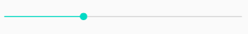

Programação para Dispositivos Móveis I
Fagno Alves Fonseca <fagno.fonseca@ifto.edu.br> Mestre em Modelagem Computacional de Sistemas – UFT.
1. Activity
A classe Activity representa uma tela da aplicação e é responsável por controlar os eventos da tela e definir qual View será responsável por desenhar a interface do usuário.
A classe da Activity deve sobrescrever o método onCreate(bundle). Método obrigatório e responsável por realizar a inicialização necessária para executar a aplicação.
| Cada Activity deve ser obrigatoriamente declarada no arquivo AndroidManifest.xml. |
Na prática podemos associar a palavra “activity” à palavra “tela”. Iniciar uma activity: “iniciar um tela”. A tradução da palavra activity para o português é Atividade.
A classe Activity é um componente fundamental em um aplicativo Android. As atividades são responsáveis pela navegação e interação em um aplicativo Android, e cada tela visível em um aplicativo é geralmente implementada como uma atividade.
Informações sobre:
-
Ciclo de Vida: As atividades têm um ciclo de vida que abrange diferentes estados, desde a criação até a destruição. Isso permite que você gerencie recursos, mantenha o estado do aplicativo e responda a eventos específicos. Alguns dos principais métodos do ciclo de vida incluem onCreate(), onStart(), onResume(), onPause(), onStop() e onDestroy().
-
Interface do Usuário: As atividades geralmente contêm a interface do usuário do aplicativo. Isso pode incluir elementos como botões, campos de texto, imagens e outros componentes visuais que os usuários podem interagir.
-
Interações: As atividades são projetadas para responder a eventos de entrada do usuário, como toques na tela, cliques de botões e eventos de teclado. Você pode implemen- tar manipuladores de eventos para controlar como a atividade responde a esses eventos.
-
Intenções (Intents): As atividades são iniciadas e comunicam-se umas com as outras usando Intenções. Uma Intenção é um objeto que descreve a ação a ser realizada, como abrir uma atividade específica, enviar dados entre atividades ou realizar uma ação genérica.
-
Layouts e Recursos: As atividades usam layouts definidos em arquivos XML para determinar a aparência da interface do usuário. Esses layouts podem conter elementos como botões, imagens e campos de texto, organizados em uma hierarquia visual.
-
Manifesto do Aplicativo: Cada atividade em um aplicativo deve ser declarada no arquivo AndroidManifest.xml. O manifesto descreve as propriedades da atividade, como sua classe, nome, ícone e configurações de permissão.
-
Estados de Execução: As atividades podem estar em diferentes estados de execução, incluindo em primeiro plano (visível para o usuário e interativo), em segundo plano (não visível, mas ainda em execução) ou em estado de pausa (ainda visível, mas não interativo).
-
Transições e Animações: Você pode definir animações de transição personalizadas ao mudar de uma atividade para outra para criar uma experiência de usuário mais agradável.
-
Padrão de Design: As atividades geralmente representam uma tela individual, seguindo o padrão de design "single screen" do Android, onde cada atividade tem uma função e interface específicas.
1.1. Classe AppCompatActivity
É uma classe fornecida pela biblioteca de suporte (agora parte do AndroidX) que oferece recursos aprimorados para desenvolvimento de atividades (activities) em aplicativos Android. Ela é uma evolução da classe padrão Activity do Android e foi projetada para simplificar o desenvolvimento de aplicativos que precisam oferecer suporte a recursos modernos e funcionar em uma variedade de versões do Android.
A classe AppCompatActivity oferece recursos de compatibilidade para versões mais antigas do Android. Isso permite que você utilize recursos modernos, como Toolbars (barras de ferramentas) e Fragments, em versões mais antigas do sistema operacional.
-
Inclui suporte integrado ao Material Design, o que facilita a implementação de diretrizes de design consistentes em diferentes versões do Android.
-
Permite que você use a ActionBar, que é uma barra de título superior que pode conter opções de menu, ícones e outros elementos de navegação.
-
Oferece suporte aprimorado para trabalhar com Fragments, que são componentes reutilizáveis de interface do usuário.
-
Simplifica a aplicação e customização de temas e estilos para garantir uma aparência coerente em todo o aplicativo.
-
Possui recursos aprimorados para gerenciamento do ciclo de vida da atividade, facilitando o tratamento de eventos como criação, pausa, retomada e destruição.
1.2. Ciclo de Vida de uma Activity

-
onCreate(): Esse callback precisa ser implementado. Ele é acionado assim que o sistema cria a atividade. Quando a atividade é criada, ela insere o estado Criado. No método onCreate(), você executa a lógica básica de inicialização do aplicativo. Isso deve acontecer somente uma vez durante todo o período que a atividade durar.
-
onStart(): Quando a atividade insere o estado Iniciado, o sistema invoca esse callback. A chamada onStart() torna a atividade visível ao usuário, à medida que o aplicativo prepara a atividade para inserir o primeiro plano e se tornar interativa.
-
onResume(): Quando a atividade insere o estado Retomado, ela vem para o primeiro plano e o sistema invoca o callback onResume(). É nesse estado que o aplicativo interage com o usuário. O aplicativo é mantido nesse estado até que algo ocorra e retire o foco do aplicativo. Um evento assim pode ser, por exemplo, o recebimento de uma chamada telefônica, a navegação do usuário para outra atividade ou o desligamento da tela do dispositivo.
-
onPause(): O sistema chama esse método como a primeira indicação de que o usuário está deixando sua atividade (embora nem sempre signifique que a atividade esteja sendo destruída). Isso indica que a atividade não está mais em primeiro plano (embora ainda possa estar visível se o usuário estiver no modo de várias janelas).
-
onStop(): Quando a atividade não estiver mais visível ao usuário, ela inserirá o estado Interrompido e o sistema invocará o callback onStop(). Isso pode ocorrer, por exemplo, quando uma atividade recém-iniciada preenche toda a tela. O sistema também poderá chamar onStop() quando a atividade parar de operar e estiver prestes a ser concluída.
-
onDestroy(): onDestroy() é chamado antes de a atividade ser destruída. O sistema invoca esse callback porque:
-
a atividade está sendo finalizada (pelo fato de o usuário descartá-la completamente ou devido a finish() ser chamado na atividade); ou
-
o sistema está destruindo temporariamente a atividade devido a uma mudança na configuração (como a rotação do dispositivo ou o modo de várias janelas).
-
1.3. Navegando entre telas
Para navegar de uma tela para outra utilizamos o método startActivity(intent) conforme exemplo a seguir.
| Este tópico tem como pré-requisito o uso de Buttons, disponível no tópico Buttons. |
Intent intent = new Intent(this,NewActivity.class);
startActivity(intent);Neste exemplo, foi criado um objeto do tipo Intent, ou seja, uma intenção. Por parâmetro foi passado a referência do contexto, neste caso o this e também a activity que deseja abrir.
Em algumas situações, não é possível representar o contexto com o this da classe. Você pode implementar o método dentro da activity conforme a seguir, ou utilizar NomeDaActivity.this, neste exemplo MainActivity.this.
public Context getActivity(){
return this;
}1.4. Retornar para a tela anterior
Sempre que uma activity é chamada, temos a necessidade de voltar para a tela anterior. Para adicionar o botão de voltar do Android, utilizamos o método getSupportActionBar().setDisplayHomeAsUpEnabled(true).
Ao clicar no botão no botão ele vai disparar a ação de menu com o identificador android.R.id.home. Implemente o método onOptionsItemSelected() do exemplo a seguir para implementar a ação.
...
@Override
protected void onCreate(Bundle savedInstanceState) {
super.onCreate(savedInstanceState);
setContentView(R.layout.activity_exemplo);
getSupportActionBar().setDisplayHomeAsUpEnabled( true );
}
@Override
public boolean onOptionsItemSelected(MenuItem item) {
switch (item.getItemId()) {
//identificar a ação de voltar a tela
case android.R.id.home:
//encerra a activity
finish();
break;
}
return super.onOptionsItemSelected( item );
}1.5. Enviando dados para outra activity
Com a classe Bundle é possível enviar dados de uma activity para outra usando a estrutura chave e valor. No entanto, neste tutorial irei apresentar como fazer tal tarefa utilizando a classe Intent devido já está sendo utilizada durante a navegação entre telas.
Intent intent = new Intent(this,NewActivity.class);
intent.putExtra("chave","Android Studio!");
startActivity(intent);Para ler o parâmetro na outra activity faça conforme a seguir.
String valor = getIntent().getStringExtra("chave");Se você imprimir o valor da String "valor" a saída será "Android Studio!".
2. Action Bar
Apresenta aos usuários as possíveis ações disponíveis no aplicativo. Neste barra, é possivel definir título do aplicativo ou telas, controle de navegação, botões customizados com as principais funções do aplicativo e menu flutuante.
2.1. Ocultando a Action Bar
Ao criar uma Activity, a Action Bar é inserida por padrão, para desabalitar, ação desejável em algumas situações, por exemplo, em um form de login. O método onCreate() a seguir apresenta como fazer.
public class MainActivity extends AppCompatActivity {
@Override
protected void onCreate(Bundle savedInstanceState) {
super.onCreate(savedInstanceState);
setContentView(R.layout.activity_main);
//oculta a ActionBar
getSupportActionBar().hide();
}
}2.2. Alterar o título da Action Bar
A instrução a seguir define um título para a activity.
getSupportActionBar().setTitle("Home");3. Interface
3.1. TextView
Um elemento da interface do usuário que exibe texto para o usuário. O exemplo de código a seguir mostra um uso típico, com um layout XML e código para modificar o conteúdo da visualização de texto.
<TextView
android:id="@+id/textView1"
android:layout_height="wrap_content"
android:layout_width="wrap_content"
android:text="TextView"/>Podemos alterar o texto por códio java conforme a seguir.
text do EditText...
textView1.setText("Olá mundo!");3.2. EditText
Um elemento da interface do usuário para inserir e modificar texto. Ao definir um widget de edição de texto, você deve especificar o atributo inputType. Por padrão, para entrada de texto simples, o atributo inputType é definido como textPersonName.
<EditText
android:id="@+id/editTextTextPersonName1"
android:layout_height = "wrap_content"
android:layout_width = "match_parent"
android:inputType = "textPersonName" />A escolha do tipo de entrada configura o tipo de teclado mostrado, os caracteres aceitáveis e a aparência do texto de edição. Por exemplo, se você deseja aceitar um número secreto, como um pino exclusivo ou número de série, pode definir inputType como "numericPassword". Um inputType de "numericPassword" resulta em um texto de edição que aceita apenas números, mostra um teclado numérico quando focalizado e mascara o texto inserido para privacidade.
Para ler dados de uma caixa de texto, utilizamos o método getText(). No entanto, para ter um retorno do tipo String utilizamos o método toString() que convete os dados para String conforme o exemplo a seguir.
...
String texto = editTextTextPersonName1.getText().toString();3.3. Mensagens
3.3.1. Notificações toast
Uma notificação toast fornece um feedback simples sobre uma operação em uma pequena janela pop-up. Ele só ocupa a quantidade de espaço necessária para a mensagem, e a atividade atual continua visível e interativa. Notificações toast desaparecem automaticamente após um tempo limite.
Por exemplo, clicar em Enviar em um e-mail aciona uma notificação toast "Enviando mensagem…", conforme exibido na captura de tela a seguir.
Primeiro, instancie um objeto Toast com um dos métodos makeText(). Esse método usa três parâmetros: o app Context, a mensagem de texto e a duração da notificação toast. Ele retorna um objeto Toast devidamente inicializado. Você pode exibir a notificação toast com show(), conforme mostrado no exemplo a seguir.
Toast toast = Toast.makeText(context, text, duration);
toast.show();Também é possível encadear seus métodos e evitar se prender ao objeto Toast, desta forma:
Toast.makeText(context, text, duration).show();3.3.2. AlertDialog
É uma caixa de diálogo que possui um título, área de conteúdo e botões de ação.
-
Título: É opcional e deve ser usado somente quando a área do conteúdo estiver ocupada por uma mensagem detalhada, uma lista ou um layout personalizado.
-
Área do conteúdo: Pode exibir uma mensagem, uma lista ou outro layout personalizado.
-
Botões de ação: Não deve haver mais de três botões em uma caixa de diálogo.
Há três botões de ação que podem ser adicionados:
-
Positivo: É o que se deve usar para aceitar e continuar a ação (a ação "OK").
-
Negativo: É o que se deve usar para cancelar a ação.
-
Neutro: É o que se deve usar quando houver a opção de o usuário não querer continuar a ação, mas não necessariamente cancelá-la. Ele aparece entre os botões positivo e negativo. Por exemplo, a ação pode ser “Notifique-me mais tarde”.
A seguir é apresentado um exemplo de um AlertDialog.
...
AlertDialog dialog = new AlertDialog.Builder(getActivity()).create();
dialog.setTitle("Alerta");
dialog.setMessage("Olá turma!");
dialog.setButton(DialogInterface.BUTTON_POSITIVE, "Ok", new DialogInterface.OnClickListener(){
@Override
public void onClick(DialogInterface dialog, int which) {
}
});
dialog.setButton(DialogInterface.BUTTON_NEGATIVE, "Cancelar", new DialogInterface.OnClickListener() {
@Override
public void onClick(DialogInterface dialogInterface, int i) {
}
});
dialog.setButton(DialogInterface.BUTTON_NEUTRAL, "Neutro", new DialogInterface.OnClickListener() {
@Override
public void onClick(DialogInterface dialogInterface, int i) {
}
});
dialog.show();3.4. Buttons
Neste tópico iremos conhecer algumas maneiras de criar eventos para botões.
O exemplo 1, demontra como criar um evento utilizando o método setOnClickListener(). Acão criada dentro do método Oncreate().
Button button = findViewById(R.id.button1);
button.setOnClickListener(new View.OnClickListener() {
@Override
public void onClick(View v) {
Toast.makeText(getActivity(),"Olá Turma!",Toast.LENGTH_LONG).show();
}
});O exemplo 2 define um método para cada ação de botão. Através do método setOnClickListener() é passado por parâmetro o nome do método que você deseja definir a ação do botão. Observe a estrutura do método acaobotao() definido no exemplo 2 acima.
@Override
protected void onCreate(Bundle savedInstanceState) {
super.onCreate(savedInstanceState);
setContentView(R.layout.activity_main);
Button button = findViewById(R.id.button1);
button.setOnClickListener(acaobotao());
}
private View.OnClickListener acaobotao() {
return new Button.OnClickListener(){
@Override
public void onClick(View v) {
Toast.makeText(getActivity(),"Olá Turma!",Toast.LENGTH_LONG).show();
}
};
}O exemplo 3 apresenta outra maneira de definir ações de clique do botão. Neste exemplo, é necessário definir no arquivo activity_main.xml o atributo android:onClick="acaobotao" com o nome do método de ação do botão. Este atributo informa que o método será chamado na activity, sendo necessário que você faça a definição deste métodos.
<Button
android:id="@+id/button"
android:layout_width="wrap_content"
android:layout_height="wrap_content"
android:onClick="acaobotao"
android:text="@string/button" />public void acaobotao(View view) {
Toast.makeText(getActivity(),"Olá Turma!",Toast.LENGTH_LONG).show();
}3.5. ListView
Um ListView é um Widget que mostra itens em uma lista de rolagem vertical.
Podemos incluir um listview em nosso layout utilizando a paleta de Widgets ou através de código XML.
| O RecyclerView é uma “evolução” da ListView e será apresentado nos próximos exemplos. |
3.5.1. ListView Simples
<ListView
android:id="@+id/lsvAlunos"
android:layout_width="match_parent"
android:layout_height="match_parent">
...
</ListView>Após definir o nosso layout, vamos agora definir nossa activity conforme a seguir.
...
public class ListaSimplesActivity extends AppCompatActivity implements AdapterView.OnItemClickListener {
ListView listView;
@Override
protected void onCreate(Bundle savedInstanceState) {
super.onCreate(savedInstanceState);
setContentView(R.layout.activity_lista_simples);
listView = findViewById(R.id.lsvAlunos);
List<String> alunos = new ArrayList();
alunos.add("Aluno 1");
alunos.add("Aluno 2");
alunos.add("Aluno 3");
ArrayAdapter adapter = new ArrayAdapter(this,
android.R.layout.simple_list_item_1, alunos);
listView.setAdapter(adapter);
}
}O resultado do exemplo anterior é apresentado na figura a seguir.
Para definir ações de click nos itens da lista, sobreescreva o método onItemClick() conforme a seguir.
...
@Override
public void onItemClick(AdapterView<?> parent, View view, int position, long id) {
//identifica o objeto da lista pelo "position" na ação do click
String nome = (String) parent.getAdapter().getItem(position);
Toast.makeText(this, nome, Toast.LENGTH_SHORT).show();
}Por fim, adicione no método onCreate() a referência ao método onItemClick() através do listView.
...
listView.setOnItemClickListener(this);3.5.2. ListView Customizado
Neste exemplo de lista customizada, vamos personalizar uma ListView de modo que cada item da lista tenha os dados que você desejar, dando uma maior flexibilidade em nossos exemplos.
Para criar uma lista customizada vamos definir um array de objetos referente ao item da lista, criar um adaptador que vai ficar responsável por atualizar os dados na tela e definir o adaptador para o ListView.
Vamos iniciar definindo uma classe para representar o objeto Aluno conforme a seguir.
public class Aluno{
private String nome;
private double nota1;
private double nota2;
//gets e sets
}Agora vamos definir nosso layout que vai apresentar os dados de cada item da lista, neste exemplo, os dados do(s) Aluno(s).
...
<TextView
android:id="@+id/textView"
android:layout_width="0dp"
android:layout_height="19dp"
android:layout_marginStart="8dp"
android:layout_marginEnd="8dp"
android:text="TextView"
app:layout_constraintEnd_toEndOf="parent"
app:layout_constraintStart_toStartOf="parent"
app:layout_constraintTop_toTopOf="parent" />
<TextView
android:id="@+id/textView2"
android:layout_width="0dp"
android:layout_height="wrap_content"
android:layout_marginStart="8dp"
android:layout_marginEnd="8dp"
android:text="TextView"
app:layout_constraintEnd_toEndOf="parent"
app:layout_constraintHorizontal_bias="0.0"
app:layout_constraintStart_toStartOf="parent"
app:layout_constraintTop_toBottomOf="@+id/textView" />
<TextView
android:id="@+id/textView3"
android:layout_width="0dp"
android:layout_height="wrap_content"
android:layout_marginStart="8dp"
android:layout_marginEnd="8dp"
android:text="TextView"
app:layout_constraintEnd_toEndOf="parent"
app:layout_constraintHorizontal_bias="0.0"
app:layout_constraintStart_toStartOf="parent"
app:layout_constraintTop_toBottomOf="@+id/textView2" />
...No nosso Layout principal da nossa Activity, devemos apenas definir o ListView, neste exemplo nomeado como activity_aula211020.xml.
Precisamos então definir nosso Adapter nomeado como AlunoAdapter, responsável por atualizar os dados na nossa tela.
...
public class AlunoAdapter extends BaseAdapter {
LayoutInflater inflater;
List<Aluno> alunos;
//construtor
public AlunoAdapter(Context context, List<Aluno> alunos) {
this.inflater = LayoutInflater.from(context);
this.alunos = alunos;
}
@Override
public int getCount() {
return alunos.size();
}
@Override
public Object getItem(int position) {
return alunos.get(position);
}
@Override
public long getItemId(int position) {
return position;
}
@Override
public View getView(int position, View convertView, ViewGroup parent) {
//identifica o item(objeto aluno) da lista através do "position"
Aluno aluno = alunos.get(position);
//infla o layout "itens_lista_customizada_aluno" para referênciar/receber o item
convertView = inflater.inflate(R.layout.item_lista_simples_adapter,null);
//aponta qual dado o componente do layout vai receber
((TextView)convertView.findViewById(R.id.textView)).setText(aluno.getNome());
((TextView)convertView.findViewById(R.id.textView2)).setText(String.valueOf(aluno.getNota1()));
((TextView)convertView.findViewById(R.id.textView3)).setText(String.valueOf(aluno.getNota2()));
return convertView;
}
}Por fim, vamos definir o código necessário em nossa activity para finalizar nosso exemplo. A seguir, fazemos referência ao nosso listView, definimos nossos objetos e definimos nosso adaptador para o ListView.
public class aula211020 extends AppCompatActivity {
ListView listView;
@Override
protected void onCreate(Bundle savedInstanceState) {
super.onCreate(savedInstanceState);
setContentView(R.layout.activity_aula211020);
//faz referência ao ListView do layout "activity_lista_customizada"
listView = findViewById(R.id.lsvAlunos);
//define uma lista de alunos
List<Aluno> alunos = new ArrayList<>();
//cria e inicializa os dados dos alunos
Aluno a1 = new Aluno("Aluno 1",9.5,6.8);
Aluno a2 = new Aluno("Aluno 2",8.5,6.8);
Aluno a3 = new Aluno("Aluno 3",7.5,8.8);
Aluno a4 = new Aluno("Aluno 4",6.5,7.8);
//add alunos na lista
alunos.add(a1);
alunos.add(a2);
alunos.add(a3);
alunos.add(a4);
AlunoAdapter alunoAdapter = new AlunoAdapter(this,alunos);
listView.setAdapter(alunoAdapter);
}
}O resultado deste exemplo é apresentado na figura a seguir.
3.6. CheckBox
O Checkbox permite criar uma caixa de marcação múltipla. Alguns métodos no uso do CheckBox se faz importante. Por exemplo, para verificar se o checkbox está marcado ou não, utilize o método isChecked().
CheckBox check = (CheckBox)findViewById(R.id.check1);
boolean valor = check.isChecked();Para imprimir o valor "text" do checkbox utilize o método getText().
Neste link é apresentado um exemplo de uso do CheckBox.
3.7. RadioButton
O componente Radio Button permite selecionar apenas uma única opção de uma lista. A classe RadioGroup define um grupo que contém a lista de opções, na qual, cada opção é representada por um RadioButton.
Para identificar o "id" do RadioButton selecionado utilize o método getCheckedRadioButtonId() da classe RadioGroup.
int idRBSelecionado = radioGroup.getCheckedRadioButtonId();
if(idRBSelecionado > 0){
radioButtonSelecionado = findViewById( idRBSelecionado );
}Neste link é apresentado um exemplo de uso do RadioButton.
3.8. Spinner
O Spinner permite criar um combo com opções na tela. A tabela 1 a seguir apresenta os métodos de referência ao item selecionado.
Método |
Descrição |
getSelectedItem() |
Retorna o item selecionado |
getSelectedItemId() |
Retorna o id do item selecionado |
getSelectedItemPosition() |
Retorna a posição do item selecionado. Posição equivalente ao array fornecido para o spinner. |
O exemplo a seguir descreve como utilizar o spinner para selecioanr um item da lista.
...
<Spinner
android:id="@+id/spinner"
... />
<TextView
android:id="@+id/textView"
... />
...public class MainActivity extends AppCompatActivity {
Spinner spinner;
ArrayAdapter adapter;
TextView textView;
@Override
protected void onCreate(Bundle savedInstanceState) {
super.onCreate(savedInstanceState);
setContentView(R.layout.activity_main);
List<String> nomes = new ArrayList();
nomes.add("Pessoa 1");
nomes.add("Pessoa 2");
nomes.add("Pessoa 3");
spinner = findViewById(R.id.spinner);
textView = findViewById(R.id.textView);
adapter = new ArrayAdapter(this,android.R.layout.simple_spinner_item,nomes);
adapter.setDropDownViewResource(android.R.layout.simple_spinner_item);
spinner.setAdapter(adapter);
spinner.setOnItemSelectedListener(new AdapterView.OnItemSelectedListener() {
@Override
public void onItemSelected(AdapterView<?> parent, View view, int position, long id) {
textView.setText(spinner.getSelectedItem().toString());
}
@Override
public void onNothingSelected(AdapterView<?> parent) {
}
});
}
}O resultado é apresenta na imagem a seguir.
3.9. ImageView
Para carregar uma imagem em um ImageView utilize o método setImageResource() da classe ImageView. A seguir é apresentado um exemplo.
...
<ImageView
android:id="@+id/imageView"
android:layout_width="match_parent"
android:layout_height="match_parent"
</ImageView>
......
ImageView imageView = findViewById(R.id.imageView);
imageView.setImageResource( id );
...3.10. AutoCompleteTextView
O componente AutoCompleteTextView é um campo de texto editável. Ele possibilita a entrada de texto e forneça sugestões para preenchimento automático. Utilizando quando deseja carregar uma lista de valores, e ao invés de selecionar um item em uma lista, você digita parte do texto e os resultados serão exibidos.
No exemplo a seguir, iremos apresentar um simples exemplo que carrega opções de frutas conforme texto digitado. Neste exemplo, foi criado uma instância de ArrayAdapter que recebe a lista de frutas, sendo carregado a seguir utilizando o método setAdapter() do autoCompleteTextView. Utilização bem semelhante ao uso do listView.
...
public class MainActivity extends AppCompatActivity {
AutoCompleteTextView autoCompleteTextView;
@Override
protected void onCreate(Bundle savedInstanceState) {
super.onCreate(savedInstanceState);
setContentView(R.layout.activity_main);
autoCompleteTextView = (AutoCompleteTextView) findViewById(R.id.autoCompleteTextView);
List<String> frutas = new ArrayList();
frutas.add("Banana");
frutas.add("Uva");
frutas.add("Pera");
frutas.add("Morango");
frutas.add("Melão");
frutas.add("Maçã");
frutas.add("Abacaxi");
frutas.add("Melancia");
ArrayAdapter adapter = new ArrayAdapter(this,android.R.layout.simple_dropdown_item_1line,frutas);
autoCompleteTextView.setAdapter(adapter);
}
}
...No layout activity_main.xml é necessário definir o componente AutoCompleteTextView conforme a seguir.
...
<AutoCompleteTextView
android:id="@+id/autoCompleteTextView"
android:layout_width="match_parent"
android:layout_height="wrap_content"/>
...Na figura a seguir, é apresentado a execução do exemplo.
3.11. Seekbar
SeekBar é um componente que define uma barra de progresso com nível. Você pode definir uma valor máximo, sendo o valor mínimo 0.
O método setOnSeekBarChangeListener() retorna através do parâmetro "progress" o nível selecionado.
Atributos importantes do componente:
-
a propriedade "max" define o valor valor máximo da SeekBar.

...
SeekBar seekBar = findViewById(R.id.seekBar);
seekBar.setOnSeekBarChangeListener(new SeekBar.OnSeekBarChangeListener() {
@Override
public void onProgressChanged(SeekBar seekBar, int progress, boolean fromUser) {
//@param "progress": indica o nível selecionado
Toast.makeText(MainActivity.this,String.valueOf(progress),Toast.LENGTH_SHORT).show();
}
@Override
public void onStartTrackingTouch(SeekBar seekBar) {
}
@Override
public void onStopTrackingTouch(SeekBar seekBar) {
}
});
...3.12. Ratingbar
Semelhante ao Seekbar, o Ratingbar mostra uma classificação em estrelas.
O método setOnRatingBarChangeListener() retorna através do parâmetro "rating" o nível selecionado de acordo a quantidade de estrelas.
Atributos importantes do componente:
-
numStars: define o número de itens (estrelas);
-
rating: define o valor padrão do nível classificação;
-
stepSize: define o incremento do nível classificação.
...
RatingBar ratingBar = findViewById(R.id.ratingBar);
ratingBar.setOnRatingBarChangeListener(new RatingBar.OnRatingBarChangeListener() {
@Override
public void onRatingChanged(RatingBar ratingBar, float rating, boolean fromUser) {
//@param "rating": indica o nível selecionado
Toast.makeText(MainActivity.this,String.valueOf(rating),Toast.LENGTH_SHORT).show();
}
});
...3.13. CardView
Um layout baseado em cards, permite exibir dados em contêineres com estilo semelhante. Esses contêineres são frequentemente usados em listas para armazenar as informações de cada item. No android, temos a API CardView como uma maneira fácil de mostrar informações dentro de cards que têm uma aparência consistente em toda a plataforma.
Os cards são uma maneira fácil de conter um grupo de visualizações e, ao mesmo tempo, fornecer um estilo consistente para o contêiner.
Use estas propriedades para personalizar a aparência do widget CardView:
-
Para definir o raio do canto nos layouts, use o atributo card_view:cardCornerRadius.
-
Para definir o raio do canto no código, use o método CardView.setRadius.
-
Para definir a cor do plano de fundo de um card, use o atributo card_view:cardBackgroundColor.
3.13.1. Adicionar as dependências
No modo design você pode adicionar o widget CardView, caso não tenha baixado a dependência o Android Studio irá solicitar. No entato, você pode adicionar a seguinte dependência ao arquivo build.gradle do módulo do app conforme a seguir.
dependencies {
implementation 'androidx.cardview:cardview:1.0.0'
}3.13.2. Criar Cards
Para usar o CardView, você precisa adicioná-lo ao arquivo de layout conforme exemplo a seguir. Use-o como um grupo de visualização para conter outras visualizações. Neste exemplo, você deve adicionar ao CardView os componentes que representam as informações dos itens.
<?xml version="1.0" encoding="utf-8"?>
<LinearLayout xmlns:android="http://schemas.android.com/apk/res/android"
xmlns:card_view="http://schemas.android.com/apk/res-auto"
android:orientation="vertical" android:layout_width="match_parent"
android:layout_height="wrap_content">
<!-- A CardView that contains a TextView -->
<androidx.cardview.widget.CardView
android:id="@+id/card_view"
android:layout_width="match_parent"
android:layout_height="100dp"
card_view:cardCornerRadius="4dp">
//itens do card
</androidx.cardview.widget.CardView>
</LinearLayout>Mais informações em Layout baseado em Cards.
3.14. RecyclerView
Se o app precisa exibir uma lista de rolagem de elementos com base em grandes conjuntos de dados (ou dados que mudam com frequência), use RecyclerView.
3.14.1. Dependência
Assim, como descrito no exemplo do CardView, no modo design você pode adicionar o widget RecyclerView, caso não tenha baixado a dependência o Android Studio irá solicitar. No entato, você pode adicionar a seguinte dependência ao arquivo build.gradle do módulo do app conforme a seguir.
O RecyclerView tem carateristica semelhante ao ListView que você já conhece de exemplos anteriores.
dependencies {
implementation 'androidx.recyclerview:recyclerview:1.1.0'
}3.14.2. Adicionar RecyclerView ao layout
Agora você pode adicionar o RecyclerView ao arquivo de layout. Por exemplo, o layout a seguir usa RecyclerView como a única visualização de todo o layout:
<?xml version="1.0" encoding="utf-8"?>
<LinearLayout xmlns:android="http://schemas.android.com/apk/res/android"
xmlns:app="http://schemas.android.com/apk/res-auto"
xmlns:tools="http://schemas.android.com/tools"
android:layout_width="match_parent"
android:layout_height="match_parent"
android:orientation="vertical"
tools:context=".MainActivity">
<androidx.recyclerview.widget.RecyclerView
android:id="@+id/myRecyclerView"
android:orientation="vertical"
android:layout_width="match_parent"
android:layout_height="match_parent"
android:scrollbars="vertical"/>
</LinearLayout>3.14.3. Definindo a Activity
Depois de adicionar um widget RecyclerView ao layout, acesse um gerenciador para o objeto, conecte-o a um gerenciador de layout e anexe um adaptador para os dados a serem exibidos:
public class MyActivity extends Activity {
private RecyclerView recyclerView;
private RecyclerView.Adapter mAdapter;
private RecyclerView.LayoutManager layoutManager;
@Override
protected void onCreate(Bundle savedInstanceState) {
super.onCreate(savedInstanceState);
setContentView(R.layout.my_activity);
recyclerView = (RecyclerView) findViewById(R.id.my_recycler_view);
// use this setting to improve performance if you know that changes
// in content do not change the layout size of the RecyclerView
recyclerView.setHasFixedSize(true);
// use a linear layout manager
layoutManager = new LinearLayoutManager(this);
recyclerView.setLayoutManager(layoutManager);
// specify an adapter (see also next example)
mAdapter = new MyAdapter(myDataset);
recyclerView.setAdapter(mAdapter);
}
// ...
}3.14.4. Definindo um adapter
Assim como feito no exemplo de lista customizadas, precisamos definir uma adapter para nosso CardView. Você pode utilizar o exemplo feito no conteúdo sobre ListView Customizadas como referência, pois deve ajudar bastante.
Para alimentar todos os seus dados para a lista, você precisa estender a classe RecyclerView.Adapter. Esse objeto cria visualizações para itens e substitui o conteúdo de algumas das visualizações por novos itens de dados quando o item original não está mais visível.
O exemplo de código a seguir mostra uma implementação simples para um conjunto de dados que consiste em uma matriz de strings exibidas usando widgets TextView.
public class MyAdapter extends RecyclerView.Adapter<MyAdapter.MyViewHolder> {
private List<String> mDataset;
// Provide a suitable constructor (depends on the kind of dataset)
public MyAdapter(List<String> myDataset) {
this.mDataset = myDataset;
}
// Provide a reference to the views for each data item
// Complex data items may need more than one view per item, and
// you provide access to all the views for a data item in a view holder
public static class MyViewHolder extends RecyclerView.ViewHolder {
// each data item is just a string in this case
public TextView textView;
public MyViewHolder(View itemView) {
super(itemView);
textView = itemView.findViewById(R.id.textView1);
}
}
// Create new views (invoked by the layout manager)
@Override
public MyAdapter.MyViewHolder onCreateViewHolder(ViewGroup parent,
int viewType) {
// create a new view
View view = LayoutInflater.from(parent.getContext())
.inflate(R.layout.itens_layout_card, parent, false);
MyViewHolder vh = new MyViewHolder(view);
return vh;
}
// Replace the contents of a view (invoked by the layout manager)
@Override
public void onBindViewHolder(MyViewHolder holder, int position) {
// - get element from your dataset at this position
// - replace the contents of the view with that element
holder.textView.setText(mDataset.get(position));
}
// Return the size of your dataset (invoked by the layout manager)
@Override
public int getItemCount() {
return mDataset.size();
}
}4. Referências
-
LECHETA, Ricardo R. Google Android: Aprenda a criar aplicações para dispositivos móveis com o Android SDK. 5ª ed. – São Paulo: Novatec, 2016.
-
https://developer.android.com/guide/components/activities/activity-lifecycle?hl=pt-br